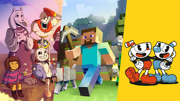

Inovasi AI dalam Pengembangan Game di Tahun 2024
Tahun 2024 menjadi tahun yang menarik bagi industri game, terutama dengan penerapan kecerdasan buatan (AI) yang semakin luas. Pengembang game kini memanfaatkan AI dan machine learning untuk menciptakan pengalaman bermain yang lebih imersif dan adaptif.
Fitur Utama:
- Karakter Non-Pemain (NPC) yang Lebih Cerdas: AI memungkinkan NPC berinteraksi dengan pemain secara lebih realistis, membuat keputusan yang lebih baik dalam situasi tertentu.
- Penyesuaian Tingkat Kesulitan: Algoritma AI dapat menyesuaikan tingkat kesulitan permainan secara dinamis, memberikan tantangan yang sesuai dengan kemampuan pemain.
- Generasi Konten Dinamis: Pengembang dapat menciptakan konten baru secara otomatis, memperpanjang umur permainan tanpa perlu pembaruan manual.
Dengan kemajuan ini, pengalaman bermain di tahun 2024 diprediksi akan lebih menarik dan menantang bagi para gamer.
Game Berbasis Cloud: Masa Depan Gaming Tanpa Batas
Cloud gaming semakin menjadi standar di tahun 2024, memungkinkan pemain untuk menikmati game berkualitas tinggi tanpa memerlukan perangkat keras mahal. Layanan seperti Google Stadia dan NVIDIA GeForce Now terus meningkatkan kapasitas mereka, menawarkan aksesibilitas yang lebih baik bagi gamer di seluruh dunia.
Keunggulan Cloud Gaming:
- Aksesibilitas Tinggi: Pemain dapat mengakses game dari berbagai perangkat, termasuk smartphone dan tablet, tanpa batasan perangkat keras.
- Kualitas Grafis Meningkat: Dengan infrastruktur cloud yang lebih baik, kualitas grafis dan latensi yang lebih rendah membuat pengalaman bermain semakin menyenangkan.
- Kompatibilitas Multi-Platform: Game berbasis cloud memungkinkan integrasi antara berbagai platform, memudahkan pemain untuk berinteraksi satu sama lain.
Cloud gaming menjanjikan masa depan gaming yang lebih inklusif dan mudah diakses oleh semua kalangan.
Tren Game Berbasis Cerita yang Mendalam
Tahun 2024 juga menyaksikan peningkatan fokus pada pengembangan game dengan cerita yang mendalam dan emosional. Pengembang semakin berusaha menciptakan narasi kompleks dengan karakter yang berkembang seiring permainan.
Aspek Menarik:
- Pilihan dan Konsekuensi: Game yang memungkinkan pemain membuat pilihan yang mempengaruhi jalannya cerita akan semakin populer. Ini memberikan pengalaman bermain yang unik dan personal.
- Pengalaman Bercerita yang Imersif: Dengan grafis dan audio canggih, pemain dapat merasakan cerita dengan cara yang lebih mendalam dan menyentuh hati.
Game dengan fokus pada narasi tidak hanya menghibur tetapi juga memberikan pengalaman emosional yang kuat bagi pemain.
Esports: Pertumbuhan dan Profesionalisme di Tahun 2024
Industri esports terus berkembang pesat di tahun 2024, dengan turnamen yang semakin besar dan hadiah yang lebih menggiurkan. Banyak tim esports profesional kini bekerja sama dengan perusahaan besar untuk menciptakan ekosistem kompetitif yang lebih terstruktur.
Fakta Menarik:
- Beasiswa untuk Pemain Esports: Beberapa universitas mulai menawarkan beasiswa bagi pemain esports berbakat, membuka jalur karir baru dalam industri ini.
- Kolaborasi dengan Brand Besar: Dukungan sponsor dari perusahaan besar meningkatkan skala dan cakupan kompetisi esports di seluruh dunia.
Esports tidak hanya menjadi hiburan tetapi juga sebuah industri serius dengan potensi karir bagi banyak orang.
Game Indie: Inovasi dan Kreativitas Tanpa Batas

Tahun 2024 merupakan tahun cerah bagi pengembang game indie. Dengan semua inovasi teknologi terbaru, banyak game indie menawarkan pengalaman unik dan kreatif yang tidak kalah menarik dibandingkan game AAA.
Keunggulan Game Indie:
- Kreativitas Tanpa Batas: Pengembang indie sering kali berani mengambil risiko dengan konsep baru dan gameplay inovatif.
- Pengalaman Bermain Unik: Banyak game indie menawarkan cerita atau mekanisme permainan yang berbeda dari kebanyakan game mainstream.
Dukungan komunitas gamer terhadap game indie terus meningkat, menjadikan tahun ini sangat menjanjikan bagi para pengembang kecil.
Visit us at
Jl. Dwiwarna Raya,
Kel. Karang Anyar, Kec. Sawah Besar. Kota Jakarta Pusat, Daerah Khusus Ibukota Jakarta